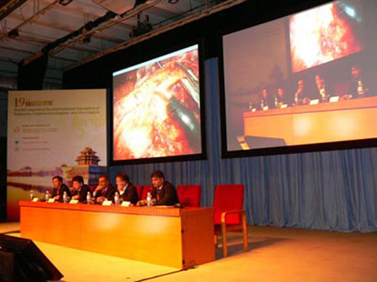

从BEYOND到beyond
发布时间：2015-08-15


唐丽丽
单位： 北京大学肿瘤医院
职称：主任
主要研究方向为癌症患者心理痛苦的发生率、心理痛苦的种类及影响因素的研究；心理干预对肿瘤患者的情绪、生活质量影响方面的研究；医患沟通技术的培训与研究。临床主要承担肿瘤患者康复和姑息治疗中疼痛和心理问题的处理和控制
第12届全国肺癌学术大会于2011年10月27-29日在湖北省武汉市举行，本次大会邀请了国内外肺癌知名专家进行大会报告以介绍目前国际最新进展。外科手术在肺癌的综合治疗中占据着十分重要的地位，在此，本频道精选“大会特刊”中部分胸外科专家的精彩报告与您共享！